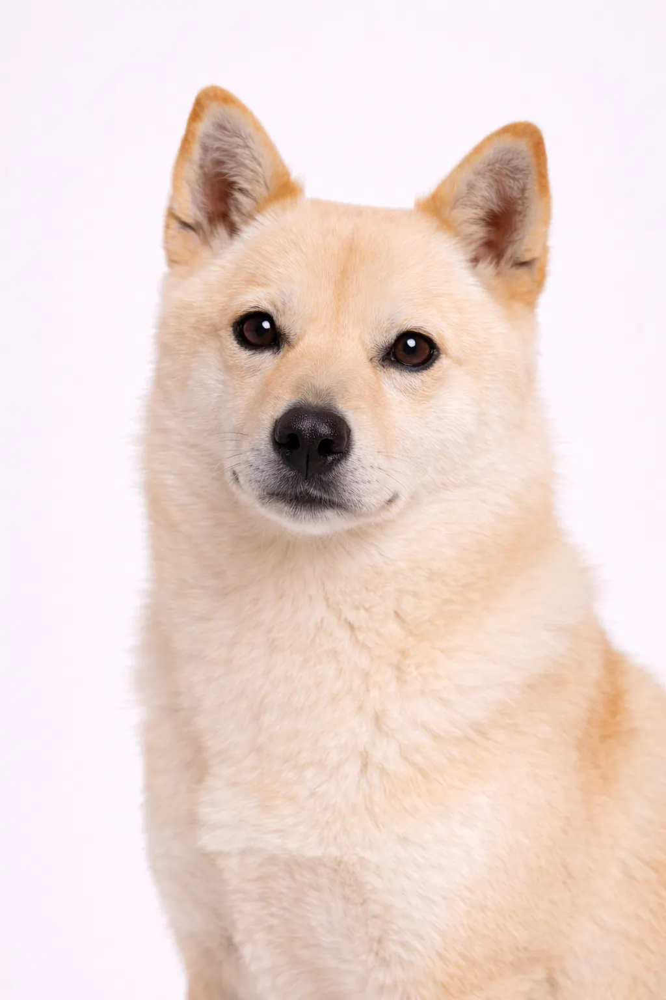

Korean Jindo
Un guardiano devoto ferocemente leale alla sua famiglia.
18-22 in
33-51 lbs
Valutazioni della Razza
Temperamento
Panoramica
Il cane nazionale della Corea del Sud, il Jindo è estremamente leale alla sua famiglia. Sono pensatori indipendenti con forte istinto predatorio e legami profondi con i loro proprietari.
Temperamento
Il Jindo Coreano è noto per essere leale, intelligentee e audace. La socializzazione precoce li aiuta a diventare compagni equilibrati.
Salute
Generalmente sani con un'aspettativa di vita di 12-15 anni. Le preoccupazioni comuni includono problemi articolari. Controlli veterinari regolari e cure preventive sono importanti. Mantenere un peso sano aiuta a prevenire molti problemi di salute.
Esercizio
Razza ad alta energia che richiede esercizio quotidiano vigoroso—almeno un'ora di attività. Prosperano con famiglie attive che amano le attività all'aperto. La stimolazione mentale attraverso l'addestramento e i giochi puzzle è altrettanto importante. Senza esercizio adeguato, possono sviluppare problemi comportamentali.
Valutazioni della Razza
Temperamento
Panoramica
Il cane nazionale della Corea del Sud, il Jindo è estremamente leale alla sua famiglia. Sono pensatori indipendenti con forte istinto predatorio e legami profondi con i loro proprietari.
Temperamento
Il Jindo Coreano è noto per essere leale, intelligentee e audace. La socializzazione precoce li aiuta a diventare compagni equilibrati.
Salute
Generalmente sani con un'aspettativa di vita di 12-15 anni. Le preoccupazioni comuni includono problemi articolari. Controlli veterinari regolari e cure preventive sono importanti. Mantenere un peso sano aiuta a prevenire molti problemi di salute.
Esercizio
Razza ad alta energia che richiede esercizio quotidiano vigoroso—almeno un'ora di attività. Prosperano con famiglie attive che amano le attività all'aperto. La stimolazione mentale attraverso l'addestramento e i giochi puzzle è altrettanto importante. Senza esercizio adeguato, possono sviluppare problemi comportamentali.
⦿ Questa Razza è Adatta a Te?
✓ Ideale Per
- Proprietari esperti
- Case con un solo animale
- Chi cerca un compagno leale
✗ Non Ideale Per
- Proprietari alla prima esperienza
- Case con più animali
- Appartamenti
Il Nostro Verdetto: Il cane nazionale della Corea del Sud, il Jindo è estremamente leale alla sua famiglia. Sono pensatori indipendenti con forte istinto predatorio e legami profondi con i loro proprietari.